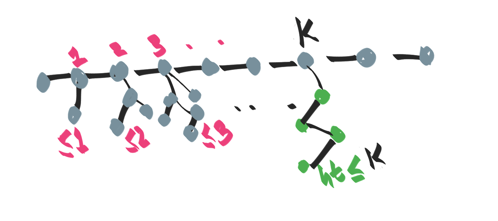
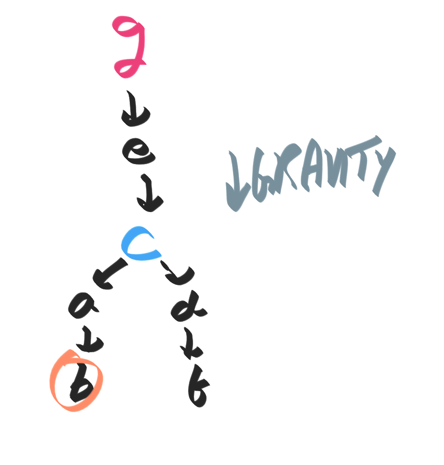

§ Diameter of a tree
§ Key property of the diameter
- Let p be a path of maximum diameter, which starts at p and ends at q.Consider a tree where the diameter is shown in golden:

- We claim that a node at distance d from the left can have a subtree ofheight at most d:

- Suppose this were not the case. Then, we can build a longer diameter (in pink)that is longer than the "supposed diameter" (in gold):

§ Algorithm to find the diameter:
First perform DFS to find a vertex "on the edge", say v. Then perform DFS again
starting from this vertex v. The farthest vertex from v, say w gives
us the diameter (the distance from v to w)
§ Proof by intuition/picture:
- first imagine the tree lying flat on the table.

- Hold the tree up at node c. It's going to fall by gravity and arrange asshown below. This is the same as performing a DFS.

- Pick one of the lowest nodes (we pick g). Now hold the entire tree fromthis lowest node, and once again allow gravity to act.

- This will give us new lowest nodes such as b. This node b is going to bediameter, "because" it's the distance from a lowest node to another lowestnode.